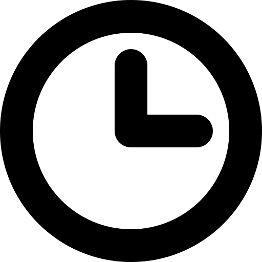

The Conference
Welcome to the home page of the 2nd International Conference on Neuro-symbolic Systems (NeuS 2025). NeuS aims to bring together novel concepts, theories, and practices that can help in the development of the science and application of neuro-symbolic computing and systems. The conference will focus on system theoretic approaches to address fundamental challenges to increase the confidence of neuro-symbolic systems by making them more secure, dependable, and trustworthy. An emphasis will be on design, analysis, and synthesis techniques for neuro-symbolic systems with a particular interest in assurance metrics, robustness, and ease of translation from design to production.
In doing so, the conference aims to advance the development of principled approaches to the design, development, and deployment of complex and sophisticated neuro-symbolic systems. Topics of particular interest are: Artificial Intelligence Machine Learning Autonomy Cyber-Physical Systems Formal Methods Large Language Models Neurosymbolic Programming Neurosymbolic Hardware
Important dates
- Submissions due: February 7, 2025
 Notification: March 17, 2025
Notification: March 17, 2025- Final version due: April 11, 2025
 Conference dates: May 28-30, 2025
Conference dates: May 28-30, 2025
📜 Paper submission information
Submissions are solicited in the following three categories:
- New research papers: papers that report new research in areas of interest to NeuS. We particularly encourage submissions that cross traditional area boundaries and address the core neuro-symbolic themes listed above.
- Tutorial-style papers: papers that explain concept(s) from a subset of the sub-communities of NeuS in a form accessible to all of the areas served by NeuS.
- Challenge problem and case study papers: papers that describe challenge problems of interest to NeuS or describe industrial-scale case studies employing existing research results, software, or hardware.
As part of submissions, we also strongly encourage submission of tools or datasets that can advance the field. The program will comprise a few keynotes, contributed oral presentations, and poster presentations. All papers will be published on the Proceedings of Machine Learning Research (PMLR) series. All submissions can be up to 10 pages in length, in the PMLR format, excluding references and appendices.
The review process is only single-blind, i.e., author names should be listed on the papers, but reviewers are anonymous to authors.
Disruptive Idea Awards: This year, DARPA will provide funding to the five most disruptive NeuS accepted paper submissions in the amount of $100K each. Each of these disruptive idea awards will last for 12 months and the funding will be provided to a senior author on the team who can serve as the principal investigator. The purpose of these awards is to encourage submissions that have the potential to radically change conventional wisdom around AI, even if the methodology and experimental results are not mature. All funding is subject to DARPA approval.
Organizers
Program Committee Chairs
George Pappas
University of Pennsylvania, USA
Pradeep Ravikumar
Carnegie Mellon University, USA
Sanjit A. Seshia
University of California, Berkeley, USA
General Chairs
Rajeev Alur
University of Pennsylvania, USA
George Pappas
University of Pennsylvania, USA
Steering Committee:
Rajeev Alur
University of Pennsylvania, USA
Sandeep Neema
Vanderbilt University, USA
George Pappas
University of Pennsylvania, USA
S. Shankar Sastry
University of California, Berkeley, USA
Sanjit A. Seshia
University of California, Berkeley, USA
Alvaro Velasquez
Defense Advanced Research Projects Agency, USA
Publicity Chair
Federico Mora
University of California, Berkeley, USA